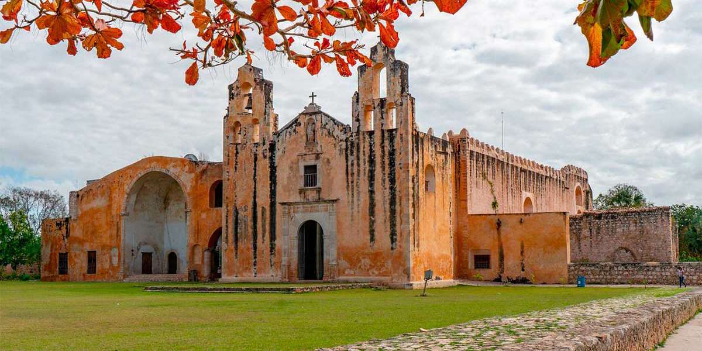

Maní, Yucatán, México, recibió el distintivo como Best Tourism Villages, por sus buenas prácticas de turismo, siendo su preservación cultural y patrimonial un ejemplo mundial de sostenibilidad.
Recientemente nombrado Pueblo Mágico por la Secretaría de Turismo de México, es una joya histórica con cuatro milenios de existencia desde el período maya temprano hasta la llegada de los franciscanos.
Sus construcciones de estilo colonial son testimonio de su historia y es el epicentro de la ruta conocida como Ruta de los Conventos, que muestra las iglesias y conventos de Yucatán. Es rica en tradiciones, talleres textiles que conservan las técnicas ancestrales del bordado tradicional, platos endémicos como el "Poc Chuc" (plato con cerdo adobado).
También es el hogar de una ruta meliponaria llamada Xunáan, donde los visitantes tienen la oportunidad de acercarse al mundo de 15 especies de abejas sagradas mayas. Se postularon 170 candidaturas de 75 países, de las cuales 44 fueron aceptadas para formar parde de este prestigiado distintivo, siendo Maní uno de ellos, al lado del Pueblo Mágico de Cuetzalan, Puebla.